Choose a week to open its audiobook. Tap the screen once to start the narration; the slides advance by themselves. (Use the ◀ ▶ buttons or the arrow keys to move back and forth.)
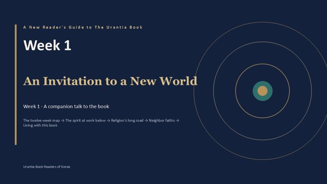
Week 1▶An Invitation to a New World
Foreword · Paper 1 · Paper 92 · Paper 101 and the papers that carry their themes
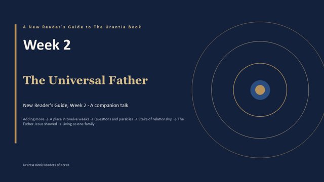
Week 2▶The Universal Father
Papers 1–5 · The Universal Father and His Children
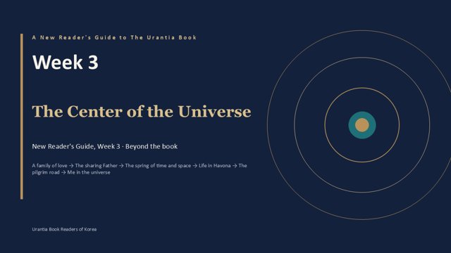
Week 3▶The Center of the Universe
Papers 6–15 · Trinity, Paradise, Havona, seven superuniverses
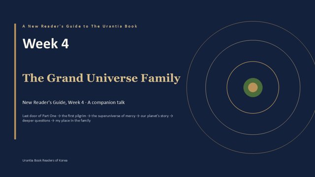
Week 4▶The Grand Universe Family
Papers 15:10 · 16 · 18:3 · 20–21 · 24, 26 · 30:4 · 31
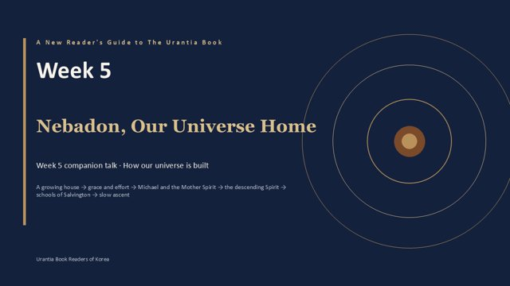
Week 5▶Nebadon, Our Universe Home
Papers 32–42 · The local universe of Nebadon and its family
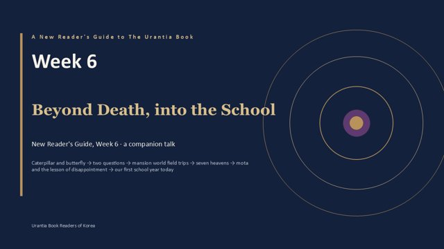
Week 6▶Beyond Death, into the School
Papers 47–48 · Paper 112 — more on the morontia life
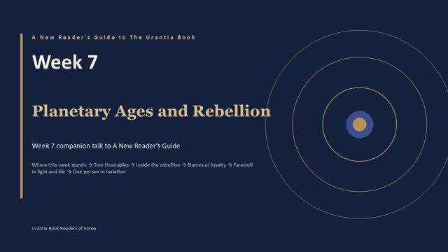
Week 7▶The Planetary Ages and the Lucifer Rebellion
Companion to Papers 49–55 · hidden stories of Papers 50, 52, 53, 54, 55
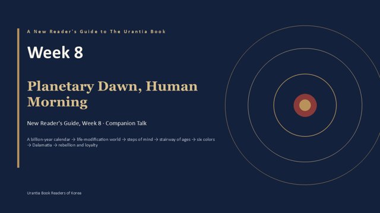
Week 8▶Planetary Dawn, Human Morning
Papers 57–68 · From the planet's birth to the Dalamatia rebellion (with Papers 51, 52, 54)
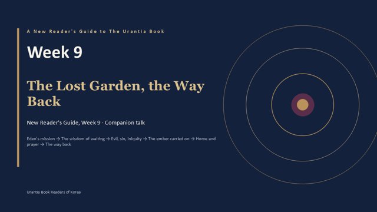
Week 9▶The Lost Garden, the Way Back
Papers 73–76 · 83–84 · from 85–92 · 93
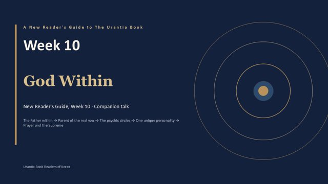
Week 10▶God Within
Papers 99–103 · 107–112 · 115–117 (plus 5 · 144)
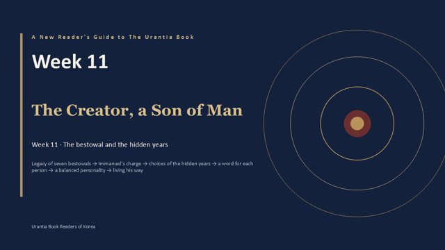
Week 11▶The Creator Becomes a Son of Man
Papers 119–120 · 128 · 133–134, and the personality of Jesus in Paper 100
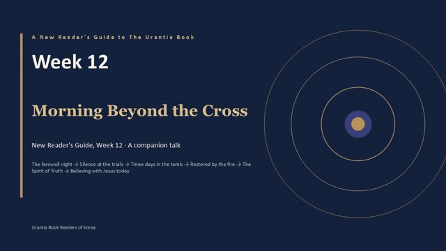
Week 12▶Morning Beyond the Cross
Paper 172:3 · Papers 179–182 · 186–194 · 196 (added: Papers 181, 186, 189, 192, 195)